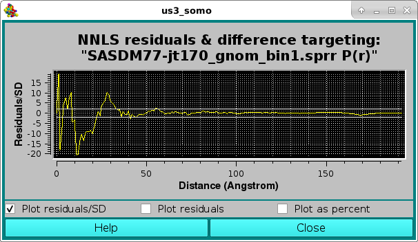
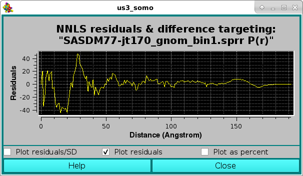

| |
Manual |
Three alternative modes are available to plot the residuals of a scaling or a NNLS fit:

As Residuals/SD, with the two horizontal white lines indicating the ± 2 SD limits. The residuals can be also viewed in the Residuals only mode:

or as a % difference, with the two horizontal white lines indicating the ± 5 % limits:
This document is part of the UltraScan Software Documentation
distribution.
Copyright © notice.
The latest version of this document can always be found at:
Last modified on March 7, 2023.